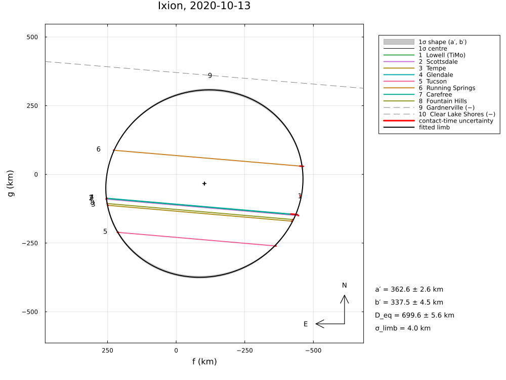
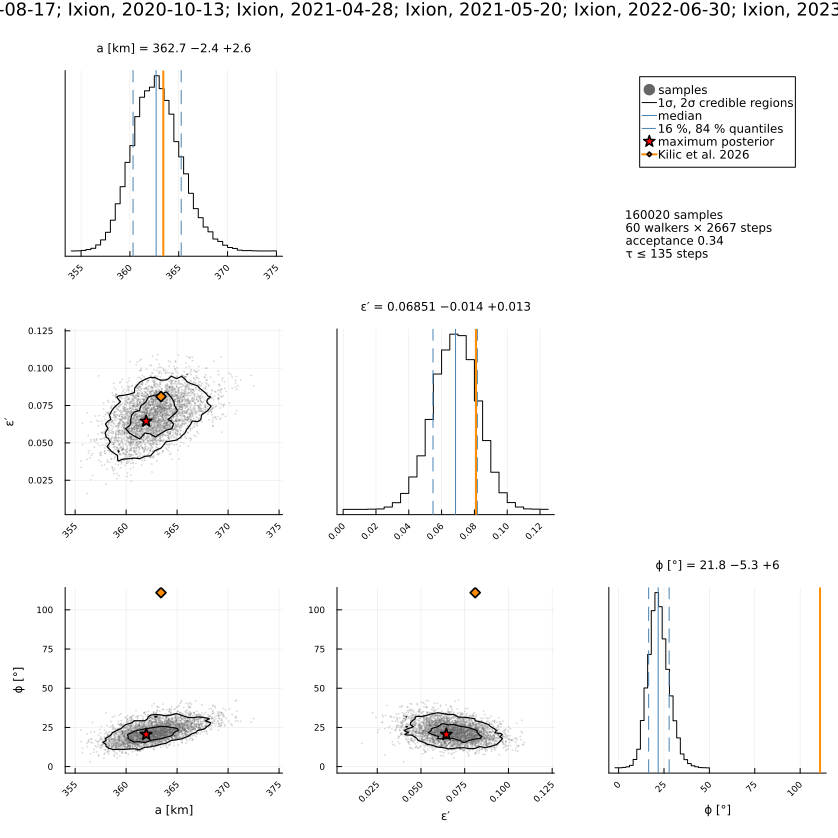

Ixion, six events 2020–2023
Six multi-chord stellar occultations by (28978) Ixion, 2020–2023, reduced from the published timings of Kilic et al. (2026), A&A 707, A70, "Constraining the size, shape, and albedo of the large trans-Neptunian object (28978) Ixion with multi-chord stellar occultations".
The example covers:
- the geometry of each event and ellipse fits per event (Table 4);
- the global fit of one ellipse with a centre per event and a limb allowance of 4 km (Eq. 4), reproduced (a = 362.6 vs 363.4 km, R_eq = 349.8 vs 348.4 km);
- the posterior, the geometric albedo and the astrometry (Table 5).
The paper mixes two position-angle conventions, and four of its six astrometric positions differ from the reduction here by 30–50 mas.
The data are transcribed in examples/data/ixion_2020_2023.jl, with the stored JPL Horizons ephemerides, so the script runs offline:
julia --project=. examples/ixion_2020_2023.jl [output_dir] (default: examples/output/ixion_2020_2023)The code is not run when the manual is built. The output after each section is that of the last run of examples/ixion_2020_2023.jl, stored in examples/output/ixion_2020_2023/output.txt.
using Occultations, Random, Printf, Statistics
using Plots
import CairoMakie # saves the GeoMakie maps (Makie figures)
include(joinpath(@__DIR__, "standard_figures.jl"))
include(joinpath(@__DIR__, "data", "ixion_2020_2023.jl"))
out = length(ARGS) >= 1 ? ARGS[1] : mkpath(joinpath(@__DIR__, "output", "ixion_2020_2023"))
rng = MersenneTwister(2026)
P = IXION_PAPER
q(x) = quantile(x, [0.15865525393145707, 0.5, 0.8413447460685429])
pm(x; d=1) = (v = q(x); Printf.format(Printf.Format("%.$(d)f -%.$(d)f +%.$(d)f"), v[2], v[2] - v[1], v[3] - v[2]))
dates = [e[1] for e in IXION_EVENTS]Events and geometry (Table 3 in parentheses)
evs = ixion_events()
for (d, ev) in zip(dates, evs)
g = P.geometry[d]
@printf("%s: %d positive, %d negative chords; distance %.2f au (%.2f), velocity %.2f km/s (%.2f)\n", d,
count(ispositive, ev.chords), count(isnegative, ev.chords), ev.ca.dist_km / 1.495978707e8, g[1], ev.ca.vel, g[2])
end2020-08-17: 3 positive, 0 negative chords; distance 38.37 au (38.37), velocity 11.61 km/s (11.61)
2020-10-13: 8 positive, 2 negative chords; distance 39.26 au (39.26), velocity 16.12 km/s (16.12)
2021-04-28: 6 positive, 5 negative chords; distance 38.15 au (38.15), velocity 13.54 km/s (13.54)
2021-05-20: 4 positive, 1 negative chords; distance 37.89 au (37.89), velocity 20.66 km/s (20.66)
2022-06-30: 4 positive, 1 negative chords; distance 37.46 au (37.46), velocity 24.67 km/s (24.66)
2023-07-28: 3 positive, 4 negative chords; distance 37.34 au (37.34), velocity 20.21 km/s (20.21)Ellipse fits per event (Table 4; radial residuals as SORA)
ϕ of the paper (SORA's position angle) is that of the minor axis (pole) from north towards east, as the position angle here; it is reduced to (−90°, 90°]:
φ(r) = mod(r[:position_angle][1] + 90, 180) - 90
for (d, ev) in zip(dates, evs)
p = P.events[d]
r = try
fit_limb(ev; residual=:radial, σ_limb=P.sigma_model, rng=rng) # σ_model = 4 km as in the global fit
catch e
nothing
end
@printf("%s paper: a = %5.1f ± %4.1f b = %5.1f ± %4.1f ϕ = %6.1f ± %5.1f R_eq = %5.1f ± %4.1f χ²pdf = %.3f\n",
d, p.a..., p.b..., p.phi..., p.R_equiv..., p.chi2_pdf)
r === nothing && (println(" (no solution)"); continue)
@printf("%s here: a = %5.1f ± %4.1f b = %5.1f ± %4.1f ϕ = %6.1f ± %5.1f R_eq = %5.1f ± %4.1f χ²/dof = %s\n",
d, r[:equatorial_radius]..., r[:semi_minor_axis]..., φ(r), r[:position_angle][2], r[:equivalent_radius]...,
r.dof > 0 ? @sprintf("%.3f", reduced_chi2(r)) : "– (no dof)")
end2020-08-17 paper: a = 375.1 ± 11.7 b = 330.2 ± 20.1 ϕ = 14.9 ± 8.1 R_eq = 351.9 ± 12.0 χ²pdf = 0.816
2020-08-17 here: a = 370.9 ± 9.9 b = 329.9 ± 7.5 ϕ = 18.4 ± 6.7 R_eq = 349.8 ± 4.0 χ²/dof = 2.518
2020-10-13 paper: a = 366.8 ± 6.2 b = 346.1 ± 7.4 ϕ = 34.1 ± 15.7 R_eq = 356.3 ± 4.9 χ²pdf = 0.926
2020-10-13 here: a = 360.4 ± 5.1 b = 341.3 ± 11.3 ϕ = 21.9 ± 21.8 R_eq = 350.7 ± 7.8 χ²/dof = 0.956
2021-04-28 paper: a = 391.9 ± 9.4 b = 322.2 ± 17.2 ϕ = 35.2 ± 17.5 R_eq = 386.3 ± 59.8 χ²pdf = 0.393
2021-04-28 here: a = 427.6 ± 150.6 b = 331.3 ± 64.2 ϕ = 38.2 ± 24.8 R_eq = 376.4 ± 102.3 χ²/dof = 0.646
2021-05-20 paper: a = 375.9 ± 20.8 b = 338.2 ± 41.6 ϕ = -4.2 ± 63.6 R_eq = 356.6 ± 24.1 χ²pdf = 0.303
2021-05-20 here: a = 503.0 ± 9421.0 b = 434.4 ± 7705.9 ϕ = 32.3 ± 3825.8 R_eq = 467.5 ± 8522.5 χ²/dof = 1.130
2022-06-30 paper: a = 389.5 ± 16.8 b = 325.6 ± 31.5 ϕ = 31.4 ± 13.5 R_eq = 356.1 ± 18.9 χ²pdf = 0.098
2022-06-30 here: a = 367.8 ± 19.7 b = 327.7 ± 60.9 ϕ = 26.8 ± 89.0 R_eq = 347.2 ± 37.4 χ²/dof = 0.154
2023-07-28 paper: a = 371.1 ± 33.5 b = 334.0 ± 47.8 ϕ = -0.0 ± 89.8 R_eq = 352.0 ± 29.8 χ²pdf = 0.938
2023-07-28 here: a = 338.3 ± 3.5 b = 215.3 ± 63.7 ϕ = 2.7 ± 2.0 R_eq = 269.9 ± 40.7 χ²/dof = 2.393Global fit: one ellipse, a centre per event, σ_model = 4 km (Eq. 4)
rg = fit_limb(evs; residual=:radial, σ_limb=P.sigma_model, rng=rng, starts=8)
n = sum(length(c.contacts) for ev in evs for c in ev.chords if ispositive(c))
@printf("paper: a = %.2f +%.2f −%.2f b = %.2f +%.2f −%.2f ϕ = %.2f +%.2f −%.2f R_eq = %.2f +%.2f −%.2f km χ²ν = %.2f (N = %d, ν = %d)\n",
P.a..., P.b..., mod(P.phi_major[1] + 90, 180) - 90, P.phi_major[2:3]..., P.R_equiv..., P.chi2_nu, P.ndata, P.dof)
println("(the paper's ϕ = 110.97° is given as −69.03° here, the same axis)")
@printf("here: a = %.2f ± %.2f b = %.2f ± %.2f ϕ = %.2f ± %.2f R_eq = %.2f ± %.2f km χ²ν = %.2f (N = %d contact times, ν = %d)\n",
rg[:equatorial_radius]..., rg[:semi_minor_axis]..., φ(rg), rg[:position_angle][2], rg[:equivalent_radius]...,
reduced_chi2(rg), n, rg.dof)
println("(the paper's N = 56 and ν = 41 imply six events, M = 3 + 2·6 = 15; Table A.1 lists 55")
println(" contact times for the six multi-chord events)")
println("negative chords closest to the limb:")
for (k, ev) in enumerate(evs)
for x in first(check_negative_chords(rg; event=k), 1)
@printf(" %s %-18s %s, %6.1f km from the limb\n", dates[k], x.chord, x.conflict ? "CROSSES THE LIMB" : "consistent",
x.distance)
end
endpaper: a = 363.42 +3.53 −3.85 b = 333.98 +7.07 −4.96 ϕ = -69.03 +7.00 −6.54 R_eq = 348.39 +5.37 −4.43 km χ²ν = 1.17 (N = 56, ν = 41)
(the paper's ϕ = 110.97° is given as −69.03° here, the same axis)
here: a = 362.58 ± 2.55 b = 337.46 ± 4.52 ϕ = 21.78 ± 5.81 R_eq = 349.80 ± 2.81 km χ²ν = 1.10 (N = 55 contact times, ν = 40)
(the paper's N = 56 and ν = 41 imply six events, M = 3 + 2·6 = 15; Table A.1 lists 55
contact times for the six multi-chord events)
negative chords closest to the limb:
2020-10-13 Gardnerville consistent, 51.5 km from the limb
2021-04-28 TRAPPIST-South consistent, 89.2 km from the limb
2021-05-20 Westport consistent, 134.6 km from the limb
2022-06-30 SONEAR consistent, 23.9 km from the limb
2023-07-28 CASLEO HSH consistent, 66.7 km from the limbPosterior, diameter and albedo (H_V = 3.845 ± 0.006)
post = sample(rg; nsteps=4000, rng=rng)
dp = derived_samples(post; n=4000, rng=rng)
S = samples(post)
col(nm) = S[:, findfirst(==(nm), post.names)]
Req = dp.equivalent_radius
pV = [(1329.0 / (2R) * 10^(-(P.H_V[1] + P.H_V[2] * randn(rng)) / 5))^2 for R in Req]
@printf("a = %s km, b = %s km, R_eq = %s km (paper %.2f +%.2f −%.2f), D_eq = %s km\n", pm(col(:equatorial_radius)),
pm(dp.semi_minor_axis), pm(Req), P.R_equiv..., pm(2 .* Req))
@printf("geometric albedo %s (paper %.3f ± %.3f)\n", pm(pV; d=3), P.albedo...)a = 362.7 -2.4 +2.6 km, b = 338.1 -4.7 +4.3 km, R_eq = 350.1 -2.6 +2.7 km (paper 348.39 +5.37 −4.43), D_eq = 700.3 -5.3 +5.3 km
geometric albedo 0.104 -0.002 +0.002 (paper 0.106 ± 0.003)Astrometry (Table 5)
for (k, (d, ev)) in enumerate(zip(dates, evs))
a = astrometry(rg; event=k)
p = P.events[d].astrometry
t = Epoch(d * "T" * p[1])
ra_, dec_, _ = ephem_radec(ev.body, t)
r_, d_ = Occultations.offset_radec(ra_, dec_, a.offset_ra, a.offset_dec)
dra = (r_ - parse_ra(p[2])) * cosd(dec_) * 3.6e6
ddec = (d_ - parse_dec(p[3])) * 3.6e6
@printf("%s %s: RA %s Dec %s (σ %.2f, %.2f mas) paper − here: %+6.2f, %+6.2f mas\n", d, p[1],
format_ra(r_; digits=5), format_dec(d_; digits=4), a.ra_err, a.dec_err, -dra, -ddec)
end2020-08-17 01:37:11.820: RA 17 49 53.58503 Dec -29 48 12.3796 (σ 0.18, 0.18 mas) paper − here: +3.50, -8.49 mas
2020-10-13 01:57:46.320: RA 17 50 20.35841 Dec -29 43 32.9076 (σ 0.06, 0.16 mas) paper − here: +1.16, +1.59 mas
2021-04-28 07:36:45.400: RA 18 05 34.68123 Dec -30 09 09.7043 (σ 0.17, 0.20 mas) paper − here: -18.60, -38.89 mas
2021-05-20 06:43:21.420: RA 18 04 05.23340 Dec -30 13 44.4169 (σ 0.87, 3.54 mas) paper − here: -13.01, -32.37 mas
2022-06-30 00:22:49.920: RA 18 06 53.61460 Dec -30 46 56.4589 (σ 0.26, 0.29 mas) paper − here: -28.30, -52.70 mas
2023-07-28 06:13:19.080: RA 18 11 03.26498 Dec -31 15 22.5068 (σ 0.11, 0.18 mas) paper − here: +13.05, -41.48 masFigures
for (k, d) in enumerate(dates)
savefig(plot(rg; event=k, title="Ixion, " * d * " (global fit)", size=(1000, 750)), joinpath(out, "ixion_$(d).png"))
# as in the paper (Fig. E.2 / Fig. 2: 1σ envelope = pointwise 1σ)
savefig(plot(rg; event=k, uncertainty=:pointwise, title="Ixion, " * d * " (as the paper: pointwise 1σ region)",
size=(1000, 750)), joinpath(out, "ixion_$(d)_paper.png"))
end
savefig(cornerplot(post; vars=[:equatorial_radius, :oblateness, :position_angle],
axislabels=Dict(:equatorial_radius => "a [km]", :oblateness => "ε′", :position_angle => "ϕ [°]"),
truths=Dict(:equatorial_radius => P.a[1], :oblateness => P.oblateness[1],
:position_angle => P.phi_major[1]), truth_label="Kilic et al. 2026"),
joinpath(out, "ixion_corner.png"))
# the standard figures: limb fits (default, 68.3 % region, as the paper), posterior, maps (prediction,
# post-fit, comparison) and the globe
standard_figures("ixion", rg; out=out, posterior=post, event=2,
projection="+proj=laea +lon_0=-105 +lat_0=35", limits=(-125, -85, 25, 47), window=600, marks=30)
println("figures written to ", out)The global fit for the event of 2020 October 13, and the posterior of the ellipse with the published values:


The results are discussed in Comparison with published reductions.